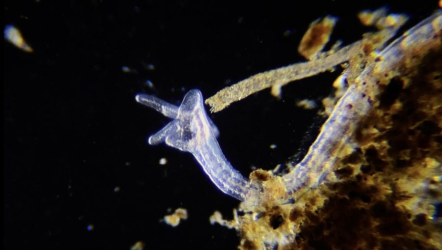

फिंगर-गिल्ड पॉन्ड वर्मFinger-gilled Pond Worm
Dero digitata · Naididae · SFL-0020

- Scientific name वैज्ञानिक नाम
- Dero digitata (Müller, 1774)
- Family कुल
- Naididae
- Hindi हिंदी
- फिंगर-गिल्ड पॉन्ड वर्म
- Local names स्थानीय नाम
- finger-gilled pond worm
- Status here यहाँ की स्थिति
- native
- Movement आवागमन
- Resident, here all year
- Known from कहाँ दर्ज
- Others have published records from the wider Awadh–Purvanchal plain, none yet from Basti–Ayodhya अवध–पूर्वांचल से दूसरों के प्रकाशित अभिलेख, बस्ती–अयोध्या से अभी नहीं
- IUCN IUCN
- not evaluated
- Review समीक्षा
- not yet reviewed
When to look कब देखें
Present all year. साल भर मौजूद।
Tell it apart from इनसे अलग पहचानें
फिंगर-गिल्ड पॉन्ड वर्म / Finger-gilled Pond Worm
Dero digitata (Müller, 1774) — Naididae
फिंगर-गिल्ड पॉन्ड वर्म — ताजे पानी के तालाबों, पोखरों और तालों की तलहटी में कीचड़ के भीतर रहने वाला एक छोटा पारदर्शी जलीय केंचुआनुमा कृमि है। इसके पिछले सिरे पर एक विशेष शाखादार गलफड़ा होता है जिसमें उंगलियों जैसी संरचनाएं होती हैं, जिन्हें यह कीचड़ से बाहर निकालकर पानी से ऑक्सीजन सोखता है। यह कीचड़ में सड़े-गले जैविक अवशेषों को खाकर पानी की सफाई में मदद करता है।
Quick Identification त्वरित पहचान
| Feature | Description |
|---|---|
| Body shape | Slender, transparent aquatic micro-annelid inhabiting silty mud |
| Tail fossa | Posterior end expanded into a ciliated branchial fossa bearing leaf-like gills |
| Branchial gills | Two pairs of true leaf-shaped gills and a pair of secondary marginal lobes |
| Setae | Ventral bundles of bifid crotchets; dorsal bundles start from segment six |
| Habit | Burrows head-downwards in soft sediment; extends waving posterior gills into water |
| Movement | Active undulating swimmer when disturbed; builds fragile mucus-silt tubes |
Field tip: Collect fine surface mud and decaying plant debris from shallow pond edges into a shallow glass dish of pond water. After sediment settles, look with a hand lens for slender transparent worms extending a cup-like, waving posterior gill rosette just above the mud layer.
हिंदी:
यह कीचड़ में अपना सिर नीचे दबाकर रखता है और पूंछ की तरफ के गलफड़ों को पानी में लहराता है।
इसका शरीर इतना पारदर्शी होता है कि इसके भीतर की रक्त नलिकाएं और आहार नली साफ दिखाई देती हैं।
कांच के बर्तन में रखने पर यह पानी में पतले धागे की तरह तैरता नजर आता है।
Morphology आकारिकी
Measurements as given by Stephenson (1923, as Dero limosa):
| Measurement | Range | Source |
|---|---|---|
| Length of single animal | about 6 mm | Stephenson (1923) |
| Segments of single animal | about 48 | Stephenson (1923) |
The body is transparent and slender, showing the red dorsal blood vessel and green or yellowish gut contents clearly through the body wall (Stephenson 1923). The prostomium is rounded and bluntly conical, lacking eyes. Ventral setal bundles of segments two to five contain four to six elongated forked crotchets with proximal noduli and slender prongs; bundles on subsequent segments contain shorter, more curved crotchets with distal noduli (Stephenson 1923).
Dorsal setal bundles begin on segment six and consist of one slender hair seta and one bifid needle seta with a sickle-shaped curve (Stephenson 1923). The posterior extremity expands into a ciliated branchial fossa that bears two pairs of leaf-shaped true gills projecting from the fossa floor and a pair of secondary gills on the anterior margin (Stephenson 1923). When oxygen is low, the branchial fossa opens broadly to maximise gas exchange.
हिंदी:
इसका शरीर लगभग छह मिलीमीटर लंबा होता है और लगभग अड़तालीस खंडों से बना होता है।
छठे खंड से पीठ पर बारीक बालों जैसे रेशे शुरू होते हैं जो चलने में मदद करते हैं।
इसके पिछले सिरे पर दो जोड़ी पत्ती जैसे गलफड़े होते हैं जो पानी से सांस लेने में सहायता करते हैं।
Behaviour & Ecology व्यवहार और पारिस्थितिकी
An obligate freshwater benthic microdrile adapted to muddy organic sediments of perennial and semi-perennial wetlands. It burrows vertically head-first into fine silt and construct loose, temporary tubes of sediment cemented by secreted mucus. The worm exposes only its ciliated posterior branchial cup into the open water column, creating micro-currents that draw oxygenated water over the respiratory surfaces.
When dissolved oxygen levels in benthic mud drop during warm periods, the worm extends its posterior further into the water column and increases the amplitude of ciliary beating. If displaced from its tube, it swims actively with rapid eel-like lateral undulations until it encounters soft substrate to re-burrow.
हिंदी:
यह कीचड़ में लंबवत बिल बनाकर रहता है और केवल अपना पिछला भाग बाहर रखता है।
पानी में ऑक्सीजन की कमी होने पर यह अपने गलफड़ों को अधिक फैलाकर तेजी से हिलाता है।
खतरे का आभास होते ही यह तेजी से कीचड़ के भीतर गायब हो जाता है।
Life Cycle / Phenology जीवन चक्र
Active throughout the year in the perennial water bodies of the Gangetic plain. Asexual reproduction by transverse paratomic fission is the predominant mode of multiplication during favourable environmental conditions. Chains of zooids form as posterior budding zones differentiate new segments before separating into independent individuals.
Sexual reproduction occurs less frequently, typically during seasonal environmental transitions. Sexually mature individuals develop clitellar tissue across segments five to seven, produce cocoons containing fertilized ova, and deposit them into benthic mud. Cocoons withstand moderate periods of adverse temperatures in bottom sediments.
हिंदी:
यह पूरे वर्ष तालाबों की तलहटी में सक्रिय रहता है और तेजी से संख्या बढ़ाता है।
इसका मुख्य प्रजनन शरीर के बीच से टूटकर दो नए जीवों में बदलने से होता है।
विपरीत परिस्थितियों में यह मिट्टी में सुरक्षात्मक आवरण में अंडे देकर जीवित रहता है।
Diet and Feeding Behaviour आहार
A detritivorous deposit feeder. It ingests fine sediment particles, organic detritus, and decomposing vegetable material:
- Benthic detritus and decomposing plant fragments from wetland mud
- Diatoms, micro-algae, and microscopic protists inhabiting organic silt
- Sediment-associated bacterial films consumed during non-selective ingestion of mud
Digestion extracts organic nutrients and microbial biomass while voiding mineral particles, contributing significantly to benthic nutrient recycling and sediment bioturbation.
हिंदी:
यह कीचड़ को निगलकर उसमें मौजूद सड़े-गले पौधों के बारीक कणों और सूक्ष्मजीवों को पचाता है।
इसके खाने से कीचड़ में वायु संचार होता है और पोषक तत्वों का चक्र बना रहता है।
Predators / Natural Enemies शत्रु
An essential intermediate forage organism in wetland trophic webs. It is heavily preyed upon by diverse aquatic animals across Gangetic water bodies:
- Benthic feeding fish, including loaches, juvenile barbs, and small catfishes
- Predaceous aquatic insect larvae, particularly odonate nymphs and dytiscid beetle larvae
- Freshwater leeches and wading birds that probe organic sediments in shallow water
हिंदी:
छोटी मछलियां, बत्तखें और जलीय कीड़ों के लार्वा इसे चाव से खाते हैं।
यह तालाब के खाद्य जाल में एक महत्वपूर्ण प्राथमिक उपभोक्ता की भूमिका निभाता है।
Agricultural / Human Relevance कृषि प्रासंगिकता
Functions as a beneficial benthic organism in rural agro-ecosystems. By continuously burrowing through and ingesting waterlogged paddy and pond mud, it prevents sediment compaction, accelerates the breakdown of organic residues, and releases bound minerals into the water column for utilization by aquatic plants.
It is harmless to agricultural crops and poses no parasitic or human disease risk. In aquaculture ponds, dense populations of naidid worms serve as high-protein live food for rearing fish spawn and juvenile fry.
हिंदी:
यह धान के खेतों और तालाबों की मिट्टी को भुरभुरा बनाकर उसकी उर्वरता बढ़ाता है।
यह किसी भी प्रकार की बीमारी नहीं फैलाता और मछली पालन में चारे के रूप में बहुत उपयोगी है।
Expected Locally स्थानीय रूप से अपेक्षित
Not a field record. Written from published accounts for eastern Uttar Pradesh. No confirmed local sighting yet — if you have seen it, that is what the atlas needs.
अभी तक स्थानीय पुष्टि नहीं। यह विवरण प्रकाशित स्रोतों से है, किसी अवलोकन से नहीं।
Occurs in organic-rich sediments of perennial village ponds, seasonal oxbow wetlands, and marshy canal ditches across eastern Uttar Pradesh. The worms inhabit the upper few centimetres of soft silt around decomposing plant tangles and are present in standing freshwaters throughout the year.
GBIF holds published records from the wider Awadh–Purvanchal plain, none yet from Basti–Ayodhya.
A confirmed first record from the district requires a clear photograph under magnification showing the posterior branchial fossa with gill lobes, with date and coordinates, submitted through the About page.
हिंदी:
पूर्वी उत्तर प्रदेश के पुराने पोखरों और तालों की तलहटी वाली मिट्टी में यह आसानी से मिल सकता है।
सूक्ष्मदर्शी या आवर्धक लेंस से इसके पिछले गलफड़ों की तस्वीर लेकर पुष्टि की जा सकती है।
Distribution वितरण
Global range: Cosmopolitan distribution in freshwater habitats across temperate, subtropical, and tropical regions worldwide (Stephenson 1923).
In India: Recorded from freshwaters across northern and central India, including documented populations from Uttar Pradesh, West Bengal, and Punjab (Stephenson 1923).
In Uttar Pradesh: Documented from regional pond surveys in eastern Uttar Pradesh, including historical literature records from Varanasi.
In Basti district / eastern UP: Expected as a common resident micro-annelid in undisturbed benthic sediments of rural ponds and wetlands.
हिंदी:
यह भारत और दुनिया भर के मीठे पानी के जलाशयों में व्यापक रूप से पाया जाता है।
उत्तर प्रदेश में यह वाराणसी और लखनऊ सहित विभिन्न जिलों के तालों से दर्ज है।
Research Questions शोध प्रश्न
- How does benthic oxygen depletion during summer affect the gill expansion behaviour of local populations? / गर्मियों में पानी में ऑक्सीजन कम होने पर इसके गलफड़ों के फैलाव पर क्या प्रभाव पड़ता है?
- What density of worms occurs across different wetland types (seasonal jheels vs perennial village tanks)? / मौसमी तालों और बारहमासी पोखरों में इस कृमि के घनत्व में क्या अंतर होता है?
- How rapidly do populations recover following annual pond desiccation and subsequent monsoon filling?
- Can naidid worm density serve school students as a bioindicator of organic pollution in village ponds? / क्या छात्र तालाबों में जैविक प्रदूषण मापने के लिए इस कृमि की संख्या का उपयोग कर सकते हैं?
- Does pesticide runoff from adjacent intensive wheat and rice fields reduce benthic worm abundance?
हिंदी:
खेतों में कीटनाशकों के प्रयोग से तालाब की मिट्टी में रहने वाले इन जीवों पर क्या असर पड़ता है?
ग्रामीण बच्चे तालाब के पानी की सेहत जांचने के लिए इस जीव की मौजूदगी का अध्ययन कर सकते हैं।
Similar Species मिलती-जुलती प्रजातियाँ
| Species | How to tell apart | हिंदी |
|---|---|---|
| Branchiodrilus Worm (Branchiodrilus hortensis) | Gills arranged along lateral body margins of anterior and mid-body segments; lacks a terminal posterior gill cup | ब्रैंकियोड्रिलस वर्म |
| Bristled Pond Worm (Nais barbata) | Lacks respiratory gills altogether; simple conical posterior extremity; eye-spots usually present | ब्रिसल्ड पॉन्ड वर्म |
| Indian Cattle Leech (Hirudinaria granulosa) | Distinctly larger flattened annelid with anterior and posterior suckers; dorsoventrally flattened muscular body | जोंक |
Field rule: A slender, transparent aquatic worm with a cup-shaped ciliated gill fossa bearing finger-like lobes at the tail tip is Dero digitata.
हिंदी:
Branchiodrilus Worm के गलफड़े पूरे शरीर के दोनों तरफ होते हैं, केवल पूंछ पर नहीं।
Bristled Pond Worm में कोई गलफड़ा नहीं होता और उसके सिर पर आंख जैसे धब्बे होते हैं।
Taxonomy & Classification वर्गीकरण
Original description. Described by Otto Friedrich Müller in 1774 as Nais digitata in Vermium Terrestrium et Fluviatilium, 1(2), p. 22; type locality: Denmark. Transferred to the genus Dero by Oken in 1815.
Subspecies. Monotypic; Dero limosa Leidy, 1852, treated as a distinct species in older Indian literature (Stephenson 1923), is recognised as a subjective junior synonym in modern zoological nomenclature (rule 32).
Family and order placement. Belongs to the family Naididae within the subclass Oligochaeta, class Clitellata, and order Tubificida.
Phylogenetic notes. Morphological and molecular studies place Dero within the naidid subfamily Naidinae, characterised by specialized respiratory gill modifications of the posterior branchial fossa.
IUCN status rationale. Not evaluated (NE) on the global IUCN Red List of Threatened Species; widespread, ecologically resilient, and abundant in global freshwaters.
हिंदी:
इसे 1774 में ओटो फ्रेडरिक मुलर द्वारा वर्णित किया गया था।
पुरानी किताबों में इसे Dero limosa के नाम से लिखा गया था जिसे अब इसी की एक प्रजाति माना जाता है।
Photo Gallery फोटो गैलरी
No photos yet — add field photos to media/species/finger_gilled_pond_worm/ and run node scripts/sync_photos.js.
Photos needed आवश्यक फोटो
- [ ] Posterior branchial fossa showing open ciliated gill lobes under magnification (गलफड़ों की स्पष्ट सूक्ष्म तस्वीर)
- [ ] Whole worm swimming or emerging from sediment tube (कीचड़ से बाहर निकले कृमि की तस्वीर)
References संदर्भ
- Müller, O. F. (1774). Vermium Terrestrium et Fluviatilium, seu Animalium Infusoriorum, Helminthicorum, et Testaceorum, non Marinorum, Succincta Historia. Havniae & Lipsiae: Heineck & Faber, 1(2), p. 22.
- Stephenson, J. (1923). The Fauna of British India, including Ceylon and Burma. Oligochaeta. London: Taylor and Francis, pp. 88–90 (as Dero limosa).
- GBIF Occurrence Data — Dero digitata, India (2025).
Source file: species/fauna/soil_fauna/finger_gilled_pond_worm.md